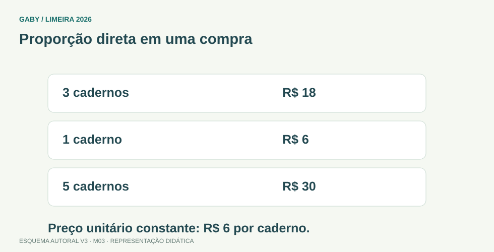

Objetivos do módulo
- Montar razões e proporções.
- Identificar proporcionalidade direta e inversa.
- Resolver regra de três simples e composta.
- Trabalhar com escala, semelhança (sombras) e razão entre áreas.
- Dividir quantias em partes diretamente e inversamente proporcionais.
- Resolver problemas de trabalho em pessoas-hora, torneiras, misturas e velocidade média.
Proporção direta em uma compra

Descrição em texto do esquema
- 3 cadernos: R$ 18
- 1 caderno: R$ 6
- 5 cadernos: R$ 30
Oficina visual · aplique o esquema
Quatro servidores concluem uma tarefa em 6 horas. Com produtividade igual, quanto tempo levariam oito servidores?
Atividade autoral complementar da V3. Registre sua resposta; a resolução está no arquivo de gabarito e revisão.
Mapa do conteúdo
1. Razão e proporção
Razão compara duas grandezas por divisão: a/b. Proporção é a igualdade entre duas razões: a/b=c/d, com propriedade fundamental ad=bc. Sempre confira unidades.
2. Direta ou inversa
| Se uma grandeza aumenta... | E a outra... | Tipo |
|---|---|---|
| aumenta na mesma relação | aumenta | direta |
| diminui na relação inversa | diminui | inversa |
3. Regra de três simples
Organize grandezas em colunas, alinhe unidades, determine se a relação é direta ou inversa e só então monte a proporção. Não use “multiplicação cruzada” sem interpretar.
4. Regra de três composta
Há três ou mais grandezas. Fixe a grandeza da incógnita e compare cada outra grandeza com ela, identificando direta/inversa. Monte o produto das razões coerentemente.
5. Conferência por bom senso
Se mais trabalhadores realizam o mesmo serviço, o tempo deve diminuir; se o cálculo faz o tempo aumentar, provavelmente você inverteu a relação.
Aprofundamento 1 — Razão: ordem, simplificação e partes do todo
A ordem dos termos
A razão entre a e b, nessa ordem, é o quociente a ÷ b, escrito a/b ou a:b (lê-se “a para b”). O primeiro termo chama-se antecedente; o segundo, consequente. A ordem é a do enunciado: na “razão entre aprovados e inscritos”, os aprovados ficam no antecedente. Trocar a ordem dá a razão inversa, que é outro número: 3:4 = 0,75, mas 4:3 ≈ 1,33.
A razão é uma medida relativa, não absoluta: 6 vitórias e 9 derrotas, ou 20 vitórias e 30 derrotas, dão a mesma razão 2:3, embora as quantidades sejam diferentes.
Simplificar e reconhecer razões equivalentes
Multiplicar ou dividir os dois termos pelo mesmo número diferente de zero não muda a razão. Por isso 900:1.200, 9:12 e 3:4 são razões equivalentes. Para simplificar, divida os dois termos por um divisor comum; o MDC leva direto à forma mais simples.
- Com decimais: multiplique os dois termos pela mesma potência de 10 até sumirem as vírgulas e depois simplifique: 0,8:2,4 → (× 10) 8:24 → (÷ 8) 1:3.
- Com unidades diferentes: converta antes. 30 min para 2 h é 30:120 = 1:4, não 30:2.
Razão parte-parte e razão parte-todo
Se garrafas de água e de suco estão na razão 4:5, essa razão compara parte com parte. O todo tem 4 + 5 = 9 partes iguais: a água é 4/9 do total e o suco, 5/9. O erro mais comum é usar 4/5 como se fosse a fração da água no total.
- Do todo para as partes: com 72 garrafas, cada parte vale 72 ÷ 9 = 8; há 4 × 8 = 32 de água e 5 × 8 = 40 de suco.
- De uma parte para o todo: aprovados e reprovados estão na razão 7:2 e há 14 reprovados. As 2 partes dos reprovados valem 14, então cada parte vale 7, e o total de 9 partes dá 9 × 7 = 63 candidatos.
- Da fração do todo para a razão parte-parte: se 3/7 de uma turma vão de ônibus e o resto vai a pé, quem vai a pé é 1 − 3/7 = 4/7 da turma. A razão ônibus:a pé é (3/7) ÷ (4/7) = 3:4.
Razões encadeadas
Quando o enunciado dá A:B e B:C, as duas razões têm B como termo comum, mas B pode aparecer com números diferentes em cada uma. Iguale o termo comum antes de comparar A com C.
Exemplo: A:B = 3:4 e B:C = 6:5. B vale 4 numa razão e 6 na outra, e MMC(4, 6) = 12. Multiplique a primeira razão por 3 (A:B = 9:12) e a segunda por 2 (B:C = 12:10). Agora A:B:C = 9:12:10, logo A:C = 9:10. O mesmo resultado sai multiplicando as frações: A/C = (A/B) × (B/C) = (3/4) × (6/5) = 18/20 = 9/10. Com a cadeia montada, outras combinações saem direto: (A + C)/B = (9 + 10)/12 = 19/12. Juntar os extremos sem igualar o termo comum (3:5) está errado.
Nova razão depois de um acréscimo
Se uma das partes muda, escreva as quantidades iniciais como múltiplos de uma constante k, aplique a mudança e iguale à nova razão.
Exemplo: numa estante, livros de ficção e de não ficção estão na razão 5:4, isto é, 5k e 4k. Acrescentam-se 6 livros de não ficção e a razão passa a 1:1. Então 5k = 4k + 6, logo k = 6: havia 30 + 24 = 54 livros antes do acréscimo. Confira: 30:30 = 1:1.
Quando o total inicial é dado, ache as partes primeiro. Uma mistura de 12 kg tem os componentes A e B na razão 1:2, ou seja, 4 kg de A e 8 kg de B. Acrescentando 2 kg de A, ficam 6 kg de A e 8 kg de B: a nova razão é 6:8 = 3:4.
Aprofundamento 2 — Proporção, semelhança e razão entre áreas
Meios, extremos e propriedade fundamental
Proporção é a igualdade entre duas razões: a/b = c/d, também escrita a:b = c:d (lê-se “a está para b assim como c está para d”), com b e d diferentes de zero. Na escrita a:b = c:d, a e d são os extremos; b e c são os meios. A propriedade fundamental diz que, numa proporção, o produto dos meios é igual ao produto dos extremos: b × c = a × d. Ela serve para testar se duas razões formam proporção e para achar um termo desconhecido.
- Testar: 6:9 e 10:15 formam proporção, pois 6 × 15 = 90 = 9 × 10.
- Termo desconhecido: x/15 = 4/6 → 6 × x = 15 × 4 = 60 → x = 10.
- Incógnita nos dois lados: x/5 = (x + 9)/8 → 8 × x = 5 × (x + 9) → 8 × x = 5 × x + 45 → 3 × x = 45 → x = 15. Confira: 15/5 = 3 e 24/8 = 3.
Propriedade da soma
Se a/b = c/d, então (a + c)/(b + d) também é igual a a/b, e (a + b)/b = (c + d)/d. Em palavras: somar antecedentes e somar consequentes mantém a razão. É essa propriedade que justifica a divisão em partes proporcionais (Aprofundamento 5): se x/3 = y/4 e x + y = 70, então x/3 = y/4 = (x + y)/(3 + 4) = 70/7 = 10, logo x = 30 e y = 40.
Sombra e semelhança de triângulos
No mesmo instante e no mesmo lugar, os raios de sol chegam praticamente paralelos. Em terreno plano, cada objeto vertical forma com sua sombra e com o raio de sol um triângulo retângulo, e os triângulos de dois objetos têm os mesmos ângulos: são semelhantes (caso ângulo-ângulo). Em triângulos semelhantes os lados correspondentes são proporcionais, então a razão altura/sombra é a mesma para os dois objetos.
Exemplo: uma vara de 1,2 m projeta sombra de 0,8 m; no mesmo momento, uma árvore projeta sombra de 6 m. Então H/6 = 1,2/0,8 → H = 6 × 1,2 ÷ 0,8 = 9 m. Confira: nos dois casos a altura é 1,5 vez a sombra.
Razão entre áreas de figuras semelhantes
Em figuras semelhantes, todos os comprimentos correspondentes ficam multiplicados pelo mesmo número k, a razão de semelhança. O perímetro também fica multiplicado por k, mas a área fica multiplicada por k2: a razão entre as áreas é o quadrado da razão entre os lados. Dois retângulos semelhantes com lados na razão 3:5 têm áreas na razão 32:52 = 9:25. Dobrar o lado de um quadrado quadruplica a área (de l2 para 4 × l2).
Aprofundamento 3 — Escala
Escala é a razão entre a medida no desenho (mapa, planta, maquete) e a medida real correspondente, nas mesmas unidades: E = d/D, com d no desenho e D na realidade. A escala 1:25.000 significa que 1 unidade no desenho corresponde a 25.000 unidades iguais na realidade: 1 cm no mapa representa 25.000 cm, ou seja, 250 m.
| Quero achar | Conta (escala 1:N) | Exemplo em 1:25.000 |
|---|---|---|
| a medida real | medida no desenho × N | 7 cm × 25.000 = 175.000 cm = 1,75 km |
| a medida no desenho | medida real ÷ N, na mesma unidade | 500 m = 50.000 cm; 50.000 ÷ 25.000 = 2 cm |
| a escala | N = medida real ÷ medida no desenho | 2 km = 200.000 cm em 8 cm; 200.000 ÷ 8 = 25.000 |
Conversões úteis: 1 m = 100 cm e 1 km = 1.000 m = 100.000 cm. Uma escala dada em palavras, como “1 cm representa 200 m”, vira escala numérica depois da conversão: 200 m = 20.000 cm, logo 1:20.000.
Trocar de escala
Para o mesmo trecho real, a medida no desenho é inversamente proporcional ao denominador da escala. Passe sempre pela medida real: 3 cm num mapa 1:40.000 representam 3 × 40.000 = 120.000 cm; num mapa 1:10.000, o mesmo trecho mede 120.000 ÷ 10.000 = 12 cm. Denominador menor significa desenho maior, com mais detalhes.
Ampliar ou reduzir uma cópia
Se uma planta em 1:50 é copiada com todos os comprimentos reduzidos a um terço, o que ocupava 3 cm passa a ocupar 1 cm. Cada centímetro da cópia representa então 3 × 50 = 150 cm reais: a nova escala é 1:150. Se a mesma planta for ampliada ao dobro, 2 cm da cópia representam 50 cm reais, isto é, 1 cm representa 25 cm: escala 1:25. Reduzir o desenho aumenta o denominador; ampliar diminui.
A escala vale para comprimentos. As áreas do desenho e da realidade ficam na razão do quadrado da escala (Aprofundamento 2).
Aprofundamento 4 — Grandezas proporcionais e quando não há proporcionalidade
Diretamente proporcionais: quociente constante
Duas grandezas são diretamente proporcionais quando o quociente y/x é o mesmo em todos os pares: y/x = k, ou y = k × x. Esse número k é a constante de proporcionalidade. Nos pares (3; 7,5), (4; 10) e (6; 15), todos os quocientes valem 2,5, logo y = 2,5 × x.
Para prever um valor, ache k e aplique: se x = 10 corresponde a y = 4, então k = 4/10 = 0,4 e, para x = 35, y = 0,4 × 35 = 14. Somar a diferença dos x ao y (4 + 25 = 29) não mantém a razão.
Inversamente proporcionais: produto constante
Duas grandezas são inversamente proporcionais quando o produto x × y é o mesmo em todos os pares. Se x = 8 corresponde a y = 15, o produto é 120; para x = 24, y = 120 ÷ 24 = 5. Triplicar x divide y por 3.
| Situação | Produto constante | Consequência |
|---|---|---|
| Velocidade e tempo, mesma distância | velocidade × tempo = distância | a 80 km/h e a 100 km/h, os tempos ficam na razão 100:80 = 5:4 |
| Densidade e volume, mesma massa | densidade × volume = massa | volumes na razão 3:4 dão densidades na razão 4:3 |
| Duas engrenagens acopladas | dentes × voltas = dentes que passam pelo ponto de contato | 30 dentes × 12 voltas = 360; a de 45 dentes dá 360 ÷ 45 = 8 voltas, girando no sentido oposto |
| Pessoas e tempo, mesmo serviço e mesmo ritmo | pessoas × tempo = trabalho total | o dobro de pessoas leva a metade do tempo |
Reconhecer pela fórmula ou pela tabela
- y = 5 × x: diretamente proporcional (k = 5).
- y = 20/x: inversamente proporcional (x × y = 20).
- y = x + 5 ou y = x2: não há proporcionalidade, embora y cresça com x.
Para escolher a regra de uma tabela, teste todos os pares: uma fórmula pode acertar um par isolado e errar os demais.
Quando não há proporcionalidade
“Uma aumenta quando a outra aumenta” é necessário, mas não basta para haver proporcionalidade direta. O teste é: dobrar x dobra y? O quociente y/x é o mesmo em todos os pares? Três situações comuns quebram a proporção:
- Parcela fixa: uma conta de R$ 12 fixos mais R$ 3 por unidade custa 12 + 3 × 4 = R$ 24 para 4 unidades e 12 + 3 × 8 = R$ 36 para 8 unidades, não R$ 48. O total não é proporcional ao consumo; só a parte variável (3 × unidades) é.
- Perda constante: uma bomba que envia 84 L em 6 min tem vazão bruta de 14 L/min. Se 4 L/min se perdem no caminho, chegam 10 L/min, e em 25 min chegam 10 × 25 = 250 L. A regra de três com a vazão bruta (350 L) ignora a perda: trabalhe com a taxa líquida.
- Relação não linear: a área de um quadrado (l2) e o número de partidas de um torneio em que cada um dos n times enfrenta todos os outros uma vez, n × (n − 1)/2. Com 4 times são 6 partidas; com 8 times, 28, e não 12. Já se cada um dos 5 times de um grupo enfrenta cada um dos t times de outro grupo, há 5 × t partidas: com o primeiro grupo fixo, o número de partidas é diretamente proporcional a t.
Taxa unitária: comparar pelo valor de uma unidade
Para comparar ofertas ou produtividades, reduza à unidade (preço unitário, produção por hora). Um pacote de 6 unidades por R$ 21 sai a 21 ÷ 6 = R$ 3,50 por unidade; um de 8 unidades por R$ 26 sai a 26 ÷ 8 = R$ 3,25. O segundo é R$ 0,25 mais barato por unidade, embora custe mais no total. Do mesmo modo, quem faz 42 peças em 6 h produz 7 por hora e quem faz 40 peças em 5 h produz 8 por hora: a razão entre as produtividades é 7:8, não 42:40.
Aprofundamento 5 — Divisão proporcional e problemas em várias etapas
Divisão em partes diretamente proporcionais
Dividir um total em partes diretamente proporcionais a 3, 4 e 5 é escrever as partes como 3k, 4k e 5k, em que k é quanto vale cada parte da razão. Pela propriedade da soma, k = total ÷ (3 + 4 + 5). Para R$ 2.400: k = 2.400 ÷ 12 = 200, e as partes são R$ 600, R$ 800 e R$ 1.000 (soma 2.400, confere).
O valor de k pode vir de qualquer informação sobre as partes:
| Informação dada | Como achar k | Exemplo |
|---|---|---|
| o total | total ÷ soma dos números da razão | impressoras com velocidades na razão 4:7 imprimem juntas 66 páginas por minuto: k = 66 ÷ 11 = 6, logo 24 e 42 páginas por minuto |
| uma das partes | valor dessa parte ÷ seu número na razão | razão 3:4:6 com menor parte 90: k = 30; maior parte 6 × 30 = 180; total 13 × 30 = 390 |
| a diferença entre duas partes | diferença ÷ diferença dos números | razão 7:4 com diferença 120: k = 120 ÷ 3 = 40; partes 280 e 160; total 440 |
Divisão em partes inversamente proporcionais
Dividir em partes inversamente proporcionais a 2, 3 e 6 é dividir em partes diretamente proporcionais aos inversos 1/2, 1/3 e 1/6. Para trabalhar com inteiros, multiplique os inversos pelo MMC dos denominadores (6): obtém-se 3, 2 e 1. Para R$ 1.200: k = 1.200 ÷ (3 + 2 + 1) = 200, e as partes são R$ 600 (para o 2), R$ 400 (para o 3) e R$ 200 (para o 6). Confira: 600 × 2 = 400 × 3 = 200 × 6 = 1.200, o produto é constante. Na divisão inversa, o menor número recebe a maior parte.
Vários ingredientes: vale o que acaba primeiro
Se uma receita exige vários ingredientes numa proporção fixa, calcule quanto cada ingrediente disponível renderia sozinho. A resposta é o menor rendimento, porque o ingrediente limitante se esgota primeiro. Exemplo: 30 bolinhos usam 1,2 kg de farinha e 0,5 L de leite; há 2 kg de farinha e 0,7 L de leite. A farinha daria 30 × 2 ÷ 1,2 = 50 bolinhos; o leite, 30 × 0,7 ÷ 0,5 = 42. Mantida a proporção, só dá para fazer 42 bolinhos: depois deles, falta leite.
Problemas em várias etapas
Quando o enunciado empilha agrupamentos, perdas e repartições, resolva uma etapa de cada vez e anote a unidade de cada resultado. Exemplo: 6 caixas com 10 pacotes de 12 canetas têm 6 × 10 × 12 = 720 canetas; 48 vêm com defeito e restam 720 − 48 = 672; repartidas igualmente entre 16 salas, cada sala recebe 672 ÷ 16 = 42 canetas. Repartir antes de descontar a perda leva a resposta errada.
Aprofundamento 6 — Regra de três, trabalho total e taxas
Regra de três simples
A regra de três simples resolve problemas com duas grandezas proporcionais em que se conhecem três valores e se procura o quarto. Monte uma tabela com uma coluna por grandeza, na mesma unidade, e decida se a relação é direta (aumentar uma aumenta a outra na mesma razão) ou inversa (aumentar uma diminui a outra na razão inversa).
- Direta: 3 m de tecido custam R$ 54; quanto custam 7,5 m? 3/7,5 = 54/x → x = 7,5 × 54 ÷ 3 = R$ 135. Pela taxa unitária: o metro custa 54 ÷ 3 = R$ 18, e 7,5 × 18 = 135.
- Fração do serviço: uma equipe fez 3/8 de um serviço em 9 dias. Cada oitavo leva 9 ÷ 3 = 3 dias; faltam 5/8, isto é, 5 × 3 = 15 dias adicionais (24 dias no total). Leia se o enunciado pede o tempo restante ou o total.
- Concentração constante: se 10 mL de uma solução contêm 3 mg de uma substância, 45 mL da mesma solução contêm 45 × 3 ÷ 10 = 13,5 mg.
- Inversa: 5 torneiras iguais enchem um tanque em 12 h; com 6 torneiras, 5 × 12 = 6 × x → x = 10 h.
Regra de três composta
Com três ou mais grandezas, a regra de três composta segue um roteiro:
- Monte a tabela com uma coluna por grandeza e marque a coluna da incógnita.
- Compare cada outra grandeza com a incógnita, imaginando as demais fixas: se, ao aumentar essa grandeza, a incógnita aumenta na mesma razão, a relação é direta; se diminui, é inversa.
- Multiplique o valor conhecido da incógnita pelas razões nova/antiga de cada grandeza: a razão entra como está nas diretas e invertida nas inversas.
- Confira pelo bom senso.
Exemplo: 4 costureiras fazem 120 camisas em 5 dias. Quantas costureiras, no mesmo ritmo, fazem 180 camisas em 3 dias? Mais camisas exigem mais costureiras (direta: 180/120); menos dias exigem mais costureiras (inversa: 5/3). x = 4 × (180/120) × (5/3) = 4 × 1,5 × 5/3 = 10 costureiras.
Trabalho total em pessoas-hora
Num serviço feito por pessoas de mesmo ritmo, o trabalho total pode ser medido em pessoas-hora: pessoas × dias × horas por dia. Esse total não muda quando a equipe muda; muda só o tempo para concluir.
- 5 pessoas, 10 dias, 6 h por dia: 5 × 10 × 6 = 300 pessoas-hora. Com 4 pessoas trabalhando 5 h por dia (20 pessoas-hora por dia), são 300 ÷ 20 = 15 dias.
- Equipe que muda no meio: um serviço exige 150 pessoas-hora. 5 pessoas trabalham 6 h e executam 30 pessoas-hora; restam 120. Se a equipe passa a ter 8 pessoas, faltam 120 ÷ 8 = 15 h. Não recomece do zero nem use a equipe antiga para o restante.
- Falta ou etapa já executada: conte só quem trabalhou. Se, de 5 pessoas que trabalham 8 h por dia, uma falta no primeiro dia, executam-se 4 × 8 = 32 pessoas-hora nesse dia; o restante é o total menos o que já foi feito.
Trabalho conjunto e torneiras: some as taxas
Quem faz um serviço em t horas faz 1/t do serviço por hora: essa é a sua taxa (produtividade ou vazão). Trabalhando juntos, as taxas se somam; um ralo ou uma perda subtrai a sua. O tempo conjunto é 1 ÷ (taxa total). Nunca some nem tire a média dos tempos.
- Uma torneira enche um tanque em 4 h e outra em 12 h: 1/4 + 1/12 = 3/12 + 1/12 = 4/12 = 1/3 do tanque por hora; juntas, enchem em 3 h.
- Uma torneira enche em 5 h e um ralo esvazia em 20 h: 1/5 − 1/20 = 4/20 − 1/20 = 3/20 do tanque por hora; o tanque enche em 20/3 h = 6 h 40 min.
- Ana faz um relatório em 10 h e Beto em 15 h: 1/10 + 1/15 = 3/30 + 2/30 = 5/30 = 1/6 do relatório por hora; juntos, levam 6 h. Confira: juntos devem levar menos que o mais rápido sozinho.
Máquinas com produtividades diferentes
Se as máquinas não são iguais, reduza à taxa de uma máquina por hora. 3 máquinas antigas fazem 270 peças em 6 h: cada uma faz 270 ÷ (3 × 6) = 15 peças por hora. Uma máquina nova 20% mais produtiva faz 15 × 1,2 = 18 peças por hora; 4 máquinas novas em 5 h fazem 4 × 18 × 5 = 360 peças.
Aprofundamento 7 — Misturas, concentração e velocidade média
Concentração
Numa mistura, a concentração de um componente (o soluto) é a razão entre a quantidade desse componente e a quantidade total da mistura: concentração = soluto ÷ volume total. Em porcentagem, multiplique por 100. Nos problemas de prova, supõe-se mistura homogênea e volumes que se somam, sem perda nem contração; o enunciado costuma avisar. O segredo é acompanhar a quantidade de soluto, que só muda quando entra ou sai soluto.
- Juntar duas soluções: 3 L a 10% e 2 L a 40% têm 0,3 L + 0,8 L = 1,1 L de soluto em 5 L: 1,1 ÷ 5 = 0,22 = 22%. A média simples das porcentagens (25%) erra porque os volumes são diferentes.
- Retirar mistura e repor água: 40 L a 25% têm 10 L de soluto. Retirar 8 L da mistura homogênea leva 8 × 0,25 = 2 L de soluto, porque a parte retirada tem a mesma concentração do tanque; restam 8 L de soluto em 32 L. Repondo 8 L de água, o volume volta a 40 L e a concentração fica 8 ÷ 40 = 20%. A água repõe volume, não soluto.
- Volume final desejado: 4,5 L de soluto devem ficar a 9%. Se 4,5 ÷ V = 0,09, então V = 4,5 ÷ 0,09 = 50 L. Esse é o volume total final; a água a acrescentar é a diferença para o volume inicial (partindo de 30 L, acrescentam-se 20 L).
Velocidade média
Velocidade média é a distância total percorrida dividida pelo tempo total gasto, incluindo as paradas. Ela não é a média das velocidades. Exemplo: ida de 90 km a 45 km/h (2 h) e volta de 90 km a 90 km/h (1 h): 180 km ÷ 3 h = 60 km/h, e não (45 + 90) ÷ 2 = 67,5 km/h. O trecho mais lento dura mais tempo e por isso pesa mais.
Aprofundamento 8 — Mais exemplos resolvidos
Lucro dividido entre sócios
Situação: três sócios investiram R$ 10 mil, R$ 15 mil e R$ 20 mil e vão dividir um lucro de R$ 7.200 em partes diretamente proporcionais ao que investiram. Quanto recebe cada um?
Regra de três composta com relação inversa
Situação: 6 impressoras iguais imprimem 4.500 folhas em 5 h. Em quantas horas 5 dessas impressoras imprimem 6.000 folhas?
Duas torneiras e um ralo
Situação: uma torneira enche um tanque em 3 h, outra em 6 h, e um ralo o esvazia em 4 h. Com tudo aberto e o tanque inicialmente vazio, quanto tempo leva para encher?
Mistura para chegar a uma concentração
Situação: há 6 L de uma solução a 20%. Quantos litros de outra solução, a 50%, devem ser acrescentados para a mistura ficar a 30%?
Aprofundamento 9 — Resumo do aprofundamento
- Razão a:b = a ÷ b, na ordem pedida; simplifique dividindo os dois termos pelo mesmo número; com decimais, multiplique antes por 10, 100…
- Razão parte-parte a:b: o todo tem a + b partes, e a fração de a no todo é a/(a + b).
- Razões encadeadas: iguale o termo comum (ou multiplique as frações) antes de comparar os extremos.
- Nova razão após acréscimo: escreva as partes como múltiplos de k e iguale à nova razão.
- Proporção: produto dos meios = produto dos extremos; somar antecedentes e consequentes mantém a razão.
- Sombras no mesmo instante: altura/sombra constante (triângulos semelhantes). Figuras semelhantes: razão entre áreas = quadrado da razão entre os lados.
- Escala = desenho/real, nas mesmas unidades; real = desenho × N; reduzir a cópia aumenta N.
- Direta: y/x constante. Inversa: x × y constante (velocidade × tempo, densidade × volume, dentes × voltas). Parcela fixa, perda e relação não linear quebram a proporcionalidade.
- Divisão direta: cada parte = número da razão × k, com k = total ÷ soma; inversa: use os inversos.
- Vários ingredientes: vale o menor rendimento.
- Regra de três composta: compare cada grandeza com a incógnita; direta entra como está, inversa entra invertida.
- Trabalho total = pessoas × dias × horas por dia; se a equipe muda, desconte o que já foi feito.
- Trabalho conjunto: some as taxas (1/t), subtraia ralo ou perda; nunca some os tempos.
- Concentração = soluto ÷ volume total: siga o soluto. Velocidade média = distância total ÷ tempo total.
Exemplos resolvidos passo a passo
Exemplo 1
Situação: 4 servidores processam 600 documentos em 5h. Em 5h, 6 servidores processam quantos?
Exemplo 2
Situação: 8 pessoas concluem tarefa em 12 dias. 6 pessoas, mesmo ritmo, levam?
Exemplo 3
Situação: 3 máquinas, 8h/dia, produzem 1200 peças em 5 dias. Com 4 máquinas, 6h/dia, 5 dias, produção?
Pegadinhas e erros frequentes
- Não alinhar unidades.
- Inverter razão sem analisar direta/inversa.
- Confundir razão com diferença.
- Usar a razão parte-parte como fração do todo: na razão 3:7, a primeira parte é 3/10 do total, não 3/7.
- Juntar A:B e B:C sem igualar o termo comum.
- Tratar como proporcional uma conta com parcela fixa ou uma vazão com perda.
- Na divisão inversamente proporcional, dar a maior parte ao maior número.
- Somar ou tirar a média dos tempos de torneiras ou trabalhadores, em vez de somar as taxas.
- Calcular a concentração final pela média simples das porcentagens quando os volumes são diferentes, ou esquecer que a mistura retirada leva soluto.
- Calcular a velocidade média como média das velocidades.
- Usar a razão entre os lados como razão entre as áreas.
- Aplicar a escala sem converter km ou m para a unidade do desenho.
Resumo de prova
- Proporção: produto dos meios = produto dos extremos.
- Direta: sobe-sobe ou desce-desce.
- Inversa: sobe-desce.
- Composta: compare cada grandeza com a incógnita.
Exercícios do módulo
Resolva sem consultar o arquivo de gabarito. As questões são autorais e construídas para treinar os conceitos do edital.
- R$40
- R$32
- R$29
- R$120
- 10
- 5
- 60
- 20
- 5:4
- 1:5
- 3:4
- 4:3
- a=d
- a+c=b+d
- ad=bc
- ab=cd sempre
- maior
- menor
- igual necessariamente
- zero
- 75
- 0,75
- 15
- 7,50
- 120g
- 3000g
- 750g
- 600g
- escolher MMC
- multiplicar cruzado sem ler
- identificar grandezas e unidades
- somar todos os números
- 16h
- 8h
- 4h
- 2h
- 100 no desenho=1 na realidade apenas
- 1%=100%
- razão sem unidade
- 1 unidade no desenho =100 na realidade
Quando terminar, abra Matemática 03 - Razão, Proporção e Regra de Três - Gabarito e Revisão.
Checklist de domínio
- ☐ Montar razões e proporções.
- ☐ Identificar proporcionalidade direta e inversa.
- ☐ Resolver regra de três simples e composta.
- ☐ Distinguir razão parte-parte de parte-todo e resolver razões encadeadas.
- ☐ Usar meios e extremos e a propriedade da soma das proporções.
- ☐ Resolver escala, troca de escala e cópias ampliadas ou reduzidas.
- ☐ Reconhecer proporcionalidade direta, inversa ou nenhuma.
- ☐ Dividir em partes diretamente e inversamente proporcionais.
- ☐ Resolver trabalho em pessoas-hora, torneiras e taxas somadas.
- ☐ Calcular concentração de misturas e velocidade média.
Meta do módulo: 80% ou mais nas questões, sem depender de consulta.
Referências e conteúdos auxiliares
- IMPA/OBMEP — Portal da Matemática, módulosVideoaulas, exercícios e materiais por tema. Localize o assunto indicado no roteiro complementar do módulo.
- IMPA/OBMEP — Portal da Matemática, módulo Razões e Proporções (7º ano)Roteiro do módulo: razão, proporções, propriedades, números diretamente e inversamente proporcionais, regra de três simples e composta. Conferido em 18/11/2026.
- OBMEP — Material teórico: A noção de razão e exercíciosRazão como medida relativa; partes escritas como 4x e 3x a partir do total; velocidade média como distância total ÷ tempo total; densidade = massa ÷ volume; trabalho conjunto pela soma das frações feitas por hora. Conferido em 18/11/2026.
- OBMEP — Material teórico: Proporções e conceitos relacionadosDefinição de proporção, extremos e meios, e a regra “o produto dos meios é igual ao produto dos extremos”. Conferido em 18/11/2026.
- OBMEP — Material teórico: Propriedades de proporçõesPropriedades (x + y)/y = (a + b)/b e x/y = a/b = (x + a)/(y + b), aplicadas a total e diferença conhecidos e à divisão numa razão de três termos. Conferido em 18/11/2026.
- OBMEP — Material teórico: Números diretamente e inversamente proporcionaisConstante de proporcionalidade; quociente constante (direta) e produto constante (inversa); aviso de que crescer junto não basta, com o exemplo da área do quadrado. Conferido em 18/11/2026.
- OBMEP — Material teórico: Regra de três simples e compostaTabela com setas, comparação de cada grandeza com a incógnita e inversão da razão das grandezas inversamente proporcionais. Conferido em 18/11/2026.
- OBMEP — Caderno de exercícios: A noção de razãoEscala definida como E = d/D (medida no mapa ÷ medida real), com exercícios de mapas e projetos. Conferido em 18/11/2026.
- IMPA/OBMEP — Portal da Matemática, módulo Semelhança de Triângulos e Teorema de TalesRoteiro do módulo: semelhança de triângulos, casos de semelhança e aplicações do caso ângulo-ângulo. Conferido em 18/11/2026.
- OBMEP — Material teórico: Semelhança entre triângulos, parte IRazão de semelhança entre lados correspondentes; semelhança como mudança de escala (ampliação ou redução). Conferido em 18/11/2026.
- OBMEP — Material teórico: Problemas envolvendo áreas, parte 2Uso do fato de que a razão entre as áreas de triângulos semelhantes é o quadrado da razão de semelhança. Conferido em 18/11/2026.
- UNESP (FCAV Jaboticabal) — Unidades de concentração: exercícios resolvidosConcentração calculada pela quantidade de soluto dividida pelo volume da solução; na diluição, a quantidade de soluto se conserva. Conferido em 18/11/2026.
Referências externas de apoio consultadas para a V3 em 27/09/2026. A origem das questões é o material autoral do projeto; estes links não indicam que uma instituição publicou ou validou os exercícios. As páginas externas precisam de internet. Em informática, confira a versão do programa; em legislação, observe o recorte e as regras de atualização do edital.